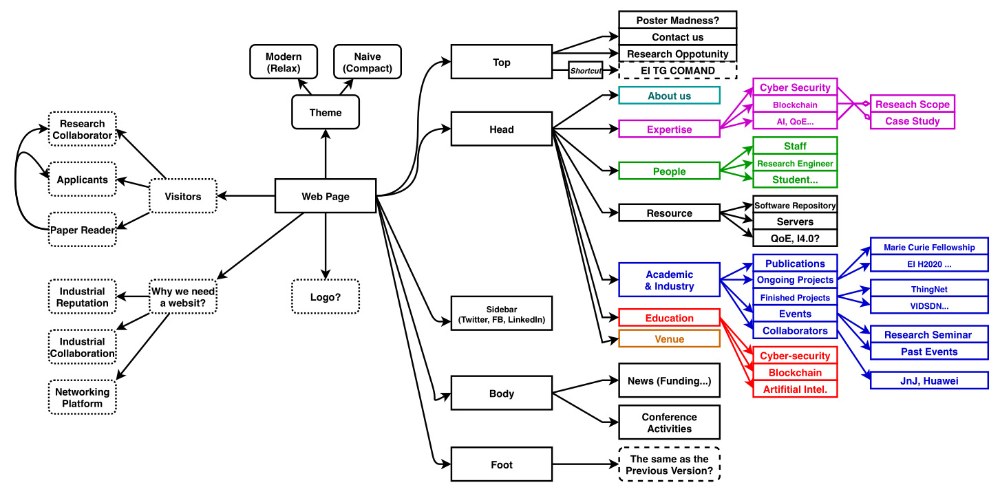

SRI & COMAND Websites TODO List
| Author | Damian Chrzanowski (mailto:pjdamian.chrzanowski@gmail.com) |
| Date | 2020-09-09 12:07:14 |
Table of Contents
- 1. General
- 2. SRI
- 3. COMAND
- 4. Back End
1 General
1.1 TODO Design
ID: GEN:hw4lscl0eqi0
[4/4]Requirements[X]Modern design[X]Sleek UI[X]Intuitive Navigation[X]CMS controlled
[0/2]Extras[ ]"Live Chat" solutions: purechat, other solutions[ ]"Subscribe to newsletter"?
[3/4]Acceptance Criteria[X]GTmetrix score of 90+[ ]High SEO[X]Eye catchy design[X]Smooth operation
[5/5]Resources
1.2 TODO COMAND.IE
ID: GEN:as7lscl0eqi0
[2/2]Requirements[X]Modernize website[X]Create user stories in COMAND user stories
1.3 TODO SRI.IE
ID: GEN:smalscl0eqi0
[1/2]Requirements[ ]Modernize website[X]Create user stories in SRI user stories
1.4 TODO General Info from Grainne
ID: GEN:xojc1ey0nqi0
1.4.1 Website
- All content on websites should be up to date and revisited regularly
- All online marketing materials, brochures/information up to date
- Gateway sites should have a link to the TG publications page/TG Booklet
- There is limited printed TG material – site downloads are now the preferred option
- Avoid using the printed 2019 TG booklet – out of date contact info
- Check all areas of website is up to date (expect increased footfall)
- Contact info
- All old events/info removed
- Clear navigation to any TG info and supports page – if you don’t have a supports page link to the TG page
- No pixelated/undersized images/Logos
- May be useful to have a Covid procedures section, outlining how you intend to communicate post lock down.
- Consider your messaging on the Home page, is it clear, should you have a sentence outlining when/you are open – Linking to any new procedures
- Make sure you have links to your social accounts on your website. (Header or Footer)
1.4.2 Blogs/Videos/Articles
- Write a blog/article e.g. new Covid procedures etc
- Reopening blog
- Any new platforms/means of communication you now use to assist companies
- Video content explaining new ways of working
- Video of labs/workspaces (does not have to be long, quick 15 second snap shots of the Gateway. These could go on the Gateway YouTube and be pushed out from there.
1.5 TODO Animations and lazy loading
2 SRI
ID: SRI:q0bffi61wqi0
2.1 TODO Current Sections
ID: SRI:u9ldcdl0eqi0
- Diagram of sections provided by Yuhang

2.2 TODO Theme
ID: SRI:n1kd0k61wqi0
[0/3]Requirements[ ]Currently selected color theme by staff consensus is: Connect Center[ ]Currently selected structure is Adapt Center[ ]However, the layout is all over the place on the connect website, needs margin/padding/spacing tweaking to look more appealing and less disorganized
2.3 TODO Twitter feed
ID: SRI:ba6dhfy0nqi0
[0/1]Requirements[ ]Provide a live feed of tweets from @aitsri
2.4 TODO News/Blog Page
ID: SRI:g1x3ujy0nqi0
[0/3]Requirements[ ]Add a blog/articles subpage[ ]EVENTS sub-page from the diagram will be populated in the News/Blog with a characteristic "event" to create a distinction from the other news[ ]CMS controlled
2.5 TODO Contact Us Page
ID: SRI:b6f9jzy0nqi0
[0/2]Requirements[ ]Add a contact us FUNCTIONING form[ ]Feedback goes to the CMS, further, CMS emails people of interest (e.g. Anthony and Brian)
2.6 TODO Nav Bar
ID: SRI:0teffi61wqi0
[0/1]Requirements[ ]Due to increased amount of headings (subpages) a doubled up nav bar might have to be used or a sub-menu style version
2.7 VERIFY Forum
[0/1]Requirements[ ]This is an extra, but might integrate a forum if needed
3 COMAND
3.1 TODO Current Sections
ID: COM:dy062dl0eqi0
3.1.1 Home
- TG Logo needs to link to Technology Gateway Website, not EI
- Welcome
- What we do
- Goals: Is there a more user friendly way of displaying the Thematic themes? Layout like this is suitable on a sub page but again with the structure how it is, it makes it text heavy and clunky. Have a look at how MET Gateway treats their themes - https://metcentre.ie/ with individual sub pages.
- Media
- Twitter feed
3.1.2 Services
Confusing layout, reorder to:
- Technology Gateway
- Technology Centre
- Funding Supports
- Innovation Voucher
- Innovation Partnership
- Agile Innovation Fund
- Commericalisation Fund
- Contract Research
- Technology Licensing
- EU programme
3.1.3 Research
- Research as presented on the old website, just modernize it
3.1.4 News (Blog)
- Blog style news page
- Each article contains: an image, a title, category (if any) and content itself
3.1.5 Projects
- Testimonials
- Project History (more info on projects if possible!)
3.1.6 Contact
- Typical form for sending info to the server
3.2 VERIFY Twitter feed
ID: COM:2x6hpfy0nqi0
[0/1]Requirements[ ]Provide a live feed of tweets from @aitsri
3.3 DONE News/Blog Page
ID: COM:ozvf2ky0nqi0
[2/2]Requirements[X]Add a blog/articles subpage[X]CMS controlled
3.4 DONE Research Page
ID: COM:ozvf2ky0nqi0
[2/2]Requirements[X]Add a research subpage[X]CMS controlled
3.5 DONE Projects Page
ID: COM:ozvf2ky0nqi0
[2/2]Requirements[X]Add a projects subpage[X]CMS controlled
3.6 DONE Services Page
ID: COM:ql68bzy0nqi0
[2/2]Requirements[X]Add a services subpage[X]CMS controlled
3.7 TODO EI integration requirements
ID: COM:31a8bzy0nqi0
[3/11]Requirements[X]Links to TG publications/TB booklet[X]Clear navigation to any TG info and supports page[ ]May be useful to have a Covid procedures section, outlining how you intend to communicate post lock down.[X]Links to social media header and footer[ ]Case study NPD website, NPD and SRI on Twitter[ ]Capital Call article twitter link (also in gmail Inbox)[ ]Funding article[ ]Ericsson & Idaso projects[ ]Valeo article[ ]EI agri article[ ]AIT and Ericcson joint research
3.8 DONE Two different types of COMAND logos
[1/1]Requirements[X]Fix so that the same logo is present
4 Back End
4.1 DONE VPS
ID: BACK:jhed1cl0eqi0
[7/7]Requirements[X]Find a cheap but good VPS (DO, AWS, Linode)- Digital Ocean is the best/easiest solution
[X]Full VPS control required[X]0.5/1 GB RAM minimum[X]1 CPU[X]Low/Medium level throughput required (it will not be a busy website)[X]VPS at or under €5 / month[X]Full access to the VPS' instance
4.2 DONE Limit access to VPS through SSH only
ID: BACK:z6gd1cl0eqi0
[0/2]Requirements[ ]Full access to the VPS via SSH only[ ]Provide a second person with ssh access, for safety reasons
4.3 DONE SSL Certs
ID: BACK:urhd1cl0eqi0
[1/1]Requirements[X]Provide SSL via letsencrypt
4.4 DONE Tech Stack
ID: BACK:kfjd1cl0eqi0
[3/3]Requirements[X]Server most likely on Ubuntu[X]Nginx as reverse proxy[X]Easy CMS solution
4.5 TODO Point domains to DO
ID: BACK:o7258gy0nqi0
[0/2]Requirements[ ]Point sri.ait.ie to 165.22.87.161[ ]Point comand.ie to 165.22.87.161- Alternatively the above domain registrars could pass domain management to DO. The rest of the setup will be carried out on DO then. DO's name servers are:
- ns1.digitalocean.com
- ns2.digitalocean.com
- ns3.digitalocean.com
4.6 DONE Serve Angular directly via Nginx
ID: BACK:8f558gy0nqi0
[0/1]Requirements[ ]Quick config for Nginx Angular serving
server { root /var/www/3dguide.xyz/html; index index.html; server_name 3dguide.xyz www.3dguide.xyz; location / { try_files $uri $uri/ /index.html =404; } location ~* \.(jpg|jpeg|png|gif|ico|css|js|pdf)$ { expires 7d; } listen 443 ssl; # managed by Certbot ssl_certificate /etc/letsencrypt/live/3dguide.xyz/fullchain.pem; # managed by Certbot ssl_certificate_key /etc/letsencrypt/live/3dguide.xyz/privkey.pem; # managed by Certbot include /etc/letsencrypt/options-ssl-nginx.conf; # managed by Certbot ssl_dhparam /etc/letsencrypt/ssl-dhparams.pem; # managed by Certbot } server { server_name 3dguide.xyz www.3dguide.xyz; location / { proxy_pass http://localhost:1337; proxy_http_version 1.1; proxy_set_header X-Forwarded-Host $host; proxy_set_header X-Forwarded-Server $host; proxy_set_header X-Real-IP $remote_addr; proxy_set_header X-Forwarded-For $proxy_add_x_forwarded_for; proxy_set_header X-Forwarded-Proto $scheme; } listen 1336 ssl; ssl_certificate /etc/letsencrypt/live/3dguide.xyz/fullchain.pem; # managed by Certbot ssl_certificate_key /etc/letsencrypt/live/3dguide.xyz/privkey.pem; # managed by Certbot include /etc/letsencrypt/options-ssl-nginx.conf; # managed by Certbot ssl_dhparam /etc/letsencrypt/ssl-dhparams.pem; # managed by Certbot } server { if ($host = www.3dguide.xyz) { return 301 https://$host$request_uri; } # managed by Certbot if ($host = 3dguide.xyz) { return 301 https://$host$request_uri; } # managed by Certbot listen 80; listen [::]:80; server_name 3dguide.xyz www.3dguide.xyz; return 404; # managed by Certbot }
4.7 TODO Provide a CI/CD pipeline
ID: BACK:xk858gy0nqi0
[0/1]Requirements[ ]Pushing to master automatically updates the server's static content